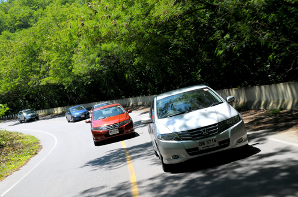

รถส่วนตัว

- จากกรุงเทพฯ ใช้ทางหลวงหมายเลข 4 ผ่านจังหวัดเพชรบุรี-ประจวบคีรีขันธ์-ชุมพร-ระนอง-พังงา-กระบี่ ระยะทาง 946 กม
- จากกรุงเทพฯ ใช้ทางหลวงหมายเลข 4 ถึงจังหวัดชุมพร จากชุมพรใช้ทางหลวงหมายเลข 41 ผ่านอำเภอหลังสวน อำเภอไชยา จังหวัดสุราษฎร์ธานี เข้าอำเภอเวียงสระ ใช้ทางหลวงหมายเลข 4035 ถึงอำเภออ่าวลึก แล้ววกเข้าทางหลวงหมายเลข 4 อีก ถึงจังหวีดกระบี่ ระยะทาง 814 กม.
- การเดินทางโดยรถยนต์จากภูเก็ต ใช้ทางหลวงแผ่นดินหมายเลข 402 และหมายเลข 4 ระยะทาง 185 กม. ใช้เวลาเดินทาง 4 ชั่วโมง จากสถานีขนส่งภูเก็ตมีบริการรถโดยสารประจำทางไปจังหวัดกระบี่ทุกวัน